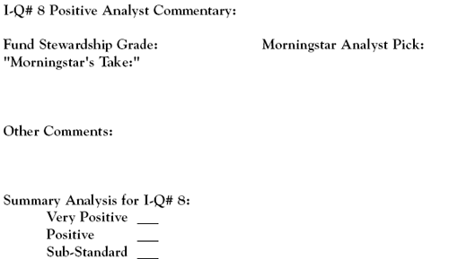

The financial media are major purveyors of information on the mutual fund industry as a whole, as well as on individual funds. The quality of this information varies greatly. Oftentimes, this content is fairly shallow and aimed at the short term, such as covering which particular fund or fund category is "flying high." While interesting and somewhat informative, it would be a mistake for investors to base their mutual fund investing decisions on this rather "lightweight" material, which doesn't come close to substantive analytical research.
So, put aside the personal finance magazines and do not waste any more time listening to the talking heads on CNBC. Familiarity with and the knowledgeable use of independent fund investment research are your keys to finding investment quality in a mutual fund. The fund reports provided by Morningstar and Value Line are outstanding examples of this type of material. They are essential evaluative tools for fund investors.
In this section, we'll look at favorable analytics as a measure of fund investment quality. Favorable analytics is not a measure that can be quantified; it involves analyst opinions and corporate governance issues.
Positive analytical commentary in a Morningstar fund report is an important indicator of mutual fund investment quality. Favorable analyst views, a Stewardship Grade of A or B, and a fund's designation as an "Analyst Pick" would place a fund in the "very positive" (highest) category of this fund I-Q ranking metric. (For more insight, read Morningstar's Stewardship Grade Scores Big.)
There are
three unique analytical mutual fund perspectives that can be found in mutual fund reports:
Return to the Main Menu
This is the entry we need to complete in the Fund Investment-Quality Scorecard for an analysis of a mutual fund's analytical commentary:
A mutual fund's stewardship grade is found in the upper left-hand corner of a Morningstar fund report under the heading, "Governance and Management." For investment quality, letter grades of 'A' and 'B' are generally considered to be positive. Letter grades of 'C' or less are substandard. (For more insight, read Morningstar's Stewardship Grade Scores Big.)
The Analyst Pick notation in Morningstar's fund report is found in the center at the very top of the page. A "yes" response to this data point makes the fund a top-rated selection, or very positive in terms of its investment quality. A "no" response should not necessarily be interpreted negatively - the fund simply did not make the cut in the elite Analyst Pick circle.
In the "Morningstar's Take" section, look for commentary that is indicative of a positive level of investment quality.
If the fund in question has been commented on by some other reliable investment information source other than Morningstar, take note of this as well and record it here.
{kind=link}